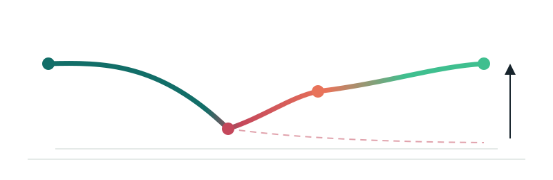

Nimbir / Revenue cycle recovery
Denied claims, worked back to payment.
Measured, not promised: on a real de-identified hospital cohort, AED 59.4M first-denied produced only AED 5.8M recovered. Nimbir works that gap on your hospital’s own hardware. Your claims never leave your building.

- 1 · Drop the 835Your payer already sends it. Parsed in this browser, never uploaded.
- 2 · Rules matchedEvery CARC denial paired with a dated, verified payer rule, and the appeal drafted.
- 3 · A person approvesReview and approve before anything is sent.
- Codes checkedCARC/RARC matched against X12.org's published code pages. Unknown codes say so, never a guess.
- Real appeal on pageA de-identified 2020 payer appeal, shown in full below
- Parsed in your browserYour 835 is never uploaded anywhere
- Transparent pricingUSD 199/month early access · no per-claim fee during preview
- Nothing on faithEvery factual claim on this page carries a verification state: verified, qualified, contradicted, or unchecked, checked against the source it cites
NIMBIR / REVENUE INTELLIGENCE
The whole book.
One trajectory.
Computed live in your browser from a real, de-identified hospital claim slice — recorded claim amounts, not payments or revenue.
Loading the local trajectory…
AI-assisted workbench
Claim work queue
A reviewable next step for every encounter.
Drop an 835
See your own denial queue in 60 seconds. Parsed locally in this browser — nothing uploaded.
Preview (first 3 rows) — check before sending
Loading the local dataset scope…
Active claims
Loading claim-line data…Select a claim to review its evidence and next action.
| Claim | Reason to review | Owner | Last update | State |
|---|
Preparing the local claim-line view.
Encounter detail
Select a claim
Claim status · demo preview
Select a claim to see its open review item.
Awaiting selection
Select a claim to see the illustrative update trigger. No live updates are scheduled.
illustrative — no live tracking yetReview context
Choose a row above to inspect its evidence and next action.
Denial-risk rank · demo scorer
UNCALIBRATED · NOT A PROBABILITYWhy the scorer ranked it here
Other checks on this claim, not risk reasons:
Raw scorer output —. This orders claims for review; it is not a chance of denial and not a denial decision. Rank thresholds were not supplied with the data.
Claim checks · verification states
GLYPH + WORD + SHAPE · COLOUR NEVER ALONEEach chip states what was actually checked: ✓ Verified (checked against the primary source it cites) · ! Qualified (checked, with a stated caveat) · ✕ Contradicted (the source disagrees) · ○ Unchecked (dashed border — nobody has verified it yet, and it offers a next step). Below the tier that can pay for primary-source verification a chip is withheld, never redefined. These four colours appear on these chips and nowhere else on this page.
Review drivers · source evidence and demo signals
- Select a claim to see its source review prompts.
Evidence ledger
- Encounter importedAwaiting selection
- Payer/remittance evidenceReview reason visible above
- Human decisionAwaiting selection
Review simulation
Practice a decision in this browser session. Nothing is submitted or saved to a claim system.
Select a claim to begin.
Any appeal draft is a suggested starting point. A person must check the source and approve before sending.
Draft for reviewer: Please review the linked claim line and payer response. Confirm the authorization record and attach supporting documentation before any appeal is submitted. This demonstration text must be checked by a human.
Evidence to appeal
Illustrative appeal format from a different real claim
This de-identified 2020 Daman AUTH-001 claim is separate from the work queue. Its three denied lines had a recorded prior authorization reference; approval and scope still need human verification.
Draft generated from a real de-identified claim; human review required before submission
This draft has not been submitted and has no appeal outcome.
Ask your data
Build a reviewable report
Choose a question. Every output carries its definition and source note.
Where the value sits · by payer
Recorded claim net units grouped by payer field in the local slice.
Denial categories
Grouped by the payer-rule denial category recorded on each line.
What to do next
Works with the files you already export
Drop the 835 your payer already sends you
Nimbir reads the X12 835 (Health Care Claim Payment/Advice, 005010X221A1) remittance file your clearinghouse or payer portal already produces — the same drop zone at the top of the work queue. Parsing happens entirely in this browser; the file is never uploaded anywhere.
- CARC / RARC reason codes shown on a dropped file are matched against a list verified against X12.org's own published code pages. A code outside that list is shown with an honest "not independently verified in this build" note — never a guessed description.
- Export de-identified findings as JSON or CSV once a file is dropped — built to HIPAA Safe Harbor's date and identifier rules (service year only, no identifier-derived IDs). The export is a download for your own records; Nimbir does not send it anywhere.
Not a live connection. Nimbir does not maintain a live link to any EHR, clearinghouse, or payer system today. This is file-based, point-in-time parsing of an 835 remittance (ERA) file you already have. 837 claim files and other formats are not yet supported.
What's actually running
Two named engines, not one black box
Nimbir Denial Agent
Reads a claim's CARC denial code (for example CO-16, CO-97, or CO-29) and proposes one next internal step — evidence retrieval, a bundling check, or a timely-filing proof — only when a matching, dated, hash-verified rule and claim-field evidence line up. Anything ambiguous, expired, or contradictory comes back as a research task for a human, not a guess. It never files anything with a payer.
Nimbir Lookup
A reference-only CPT / bill-item lookup against a de-identified item master, gated behind a per-tab credential that is never written to a URL, localStorage, or the page. Results never change what a claim is allowed to do — it is a lookup, not a decision.
One solution, not four products
What Nimbir absorbed
Nimbir is NOMOI's one revenue cycle solution. Three instruments that used to be sold and described on their own are now modules of it. Nothing was deleted: each keeps its own URL and its own routes.
MergeAct — pre-submission overlap detection
Catches the overlapping encounters that turn into Daman CLAI 008 denials before the claim is filed, alongside HCPCS reconciliation and the Activity Time Reconciler. Early access, pricing TBA at launch. mergeact.nomoi.ai
ClaimAct — post-submission leakage recovery
Four audits over inpatient claims that have already shipped: Shadow Leakage Audit, EMV Dispatch, HTLOS Monitor and Portfolio Scanner. They run in the browser against a tariff index, so the leak becomes visible after filing instead of at the next compliance audit. claimact.nomoi.ai
Tickmark — paper to coded rows
Reads printed HCPCS superbills, CMS-1500 forms and clinic tick sheets and returns submission-ready rows: a deterministic PyMuPDF preprocess, a two-model consensus check and a crosswalk against the current CMS HCPCS Level II dataset. This is the commercial track for turning paper superbills into submission-ready rows. tickmark.nomoi.ai
What did not move. Nothing was deleted: each module keeps its own URL and its own routes. Some internal tooling stays internal and is never named on a public page. Absorbing a module means one accountable workflow and one conversation for the buyer — it does not mean the modules are generally available, and it does not change the truth floor below: Nimbir holds no live payer or EHR connection and files nothing with anyone.
Transparent pricing · no "contact sales"
Revenue Floor — USD 199/month per practice
The Revenue Floor is the same early-access work queue, sold so a practice can start without a sales call: pay the first month by card, then email assel@nomoi.ai to set up your queue, no meeting needed. Prefer paper? Email the invoice request — a person replies with a payable invoice, still no meeting, no demo, no procurement call. Do not attach claim or remittance files to any email.
What USD 199/month covers: the Nimbir denial-recovery work queue for one practice, appeal drafts a person approves before anything is sent, and the 835 denial check and pre-bill check that run in your browser. Until a BAA is agreed in writing, no claim rows or patient identifiers go into the hosted queue; the two checks read your files and lines in this browser tab and upload nothing. Not included yet: production PHI/BAA coverage, live EHR or clearinghouse integrations, and SLAs are excluded until separately agreed in writing. Nimbir holds no live payer or EHR connection and files nothing with anyone.
Billed monthly. Cancel any month. Card checkout or invoice — both start onboarding without a meeting.